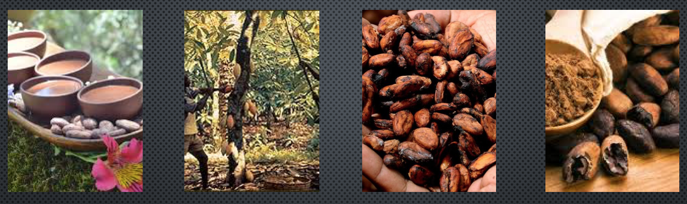

Feel good about the choices you make for your body and for the world. We have made it our mission to provide customers with the best quality of organic chocolate possible. By working closely with the local communities in rural Columbia and using traditional techniques of cocoa harvest, you can feel at ease with when you choose to shop with us. Plus, 10% of each purchase will go toward organizations who help with rainforest restoration. You can learn about our production, ancient techniques and traditions and more by clicking on one of the links above.
click this image to learn about our process